Big Data - Time Series
Understanding Time Series
Time Series?
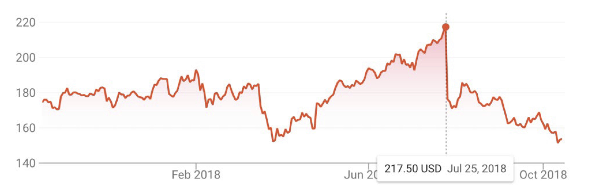
- A time series is a sequential set of data points, measured typically over successive times
- Time series analysis comprises methods for analyzing time series data in order to extract meaningful statistics and other characteristics of the data
Terminologies
- uni-variate vs. multivariate
- A time series containing records of a single variable is termed as uni-variate, but if records of more than one variable are considered then it is termed as multivariate
- linear vs. non-linear
- A time series model is said to be linear or non-linear depending on whether the current value of the series is a linear or non-linear function of past observations
- discrete vs. continuous
- In a continuous time series observations are measured at every instance of time, whereas a discrete time series contains observations measured at discrete points in time
Components of Time Series: (1) Trend
- The general tendency of a time series to increase, decrease or stagnate over a long period of time
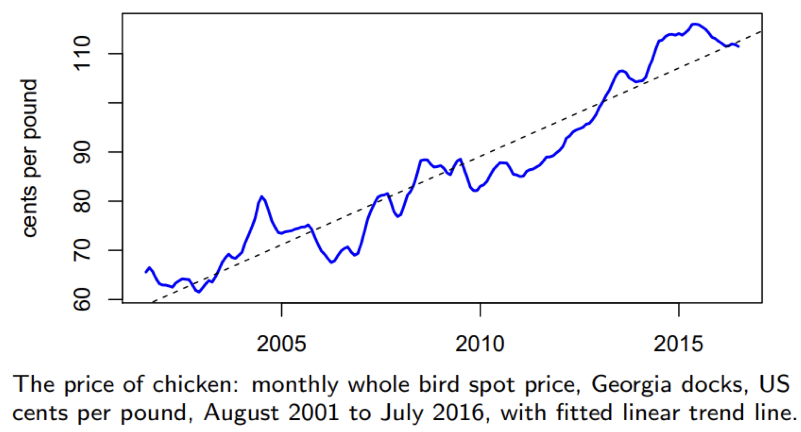
The price of chicken: monthly whole bird spot price, Georgia docks, US cents per pound, August 2001 to July 2016, with fitted linear trend line.
Components of Time Series: (2) Seasonal
- The fluctuations within a year during the season, usually caused by climate and weather conditions, customs, traditional habits, etc
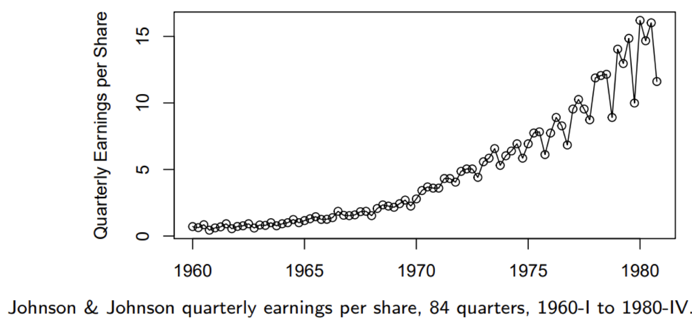
Components of Time Series: (3) Cyclic
- The medium-term (not fixed!) changes caused by circumstances, which repeat in cycles. The duration of a cycle extends over longer period of time.
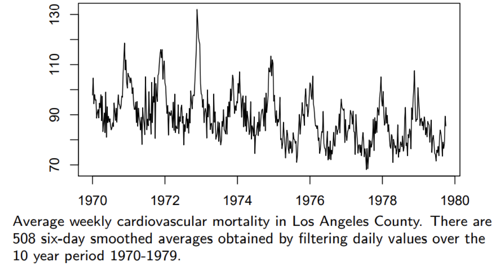
Component of Time Series: (4) Irregular
- Caused by unpredictable influences, which are not regular and also do not repeat in a particular pattern
- E.g., incidences such as war, strike, earthquake, flood, revolution, etc.
- No defined statistical technique for measuring random fluctuations in a time series
Decomposition of Time Series
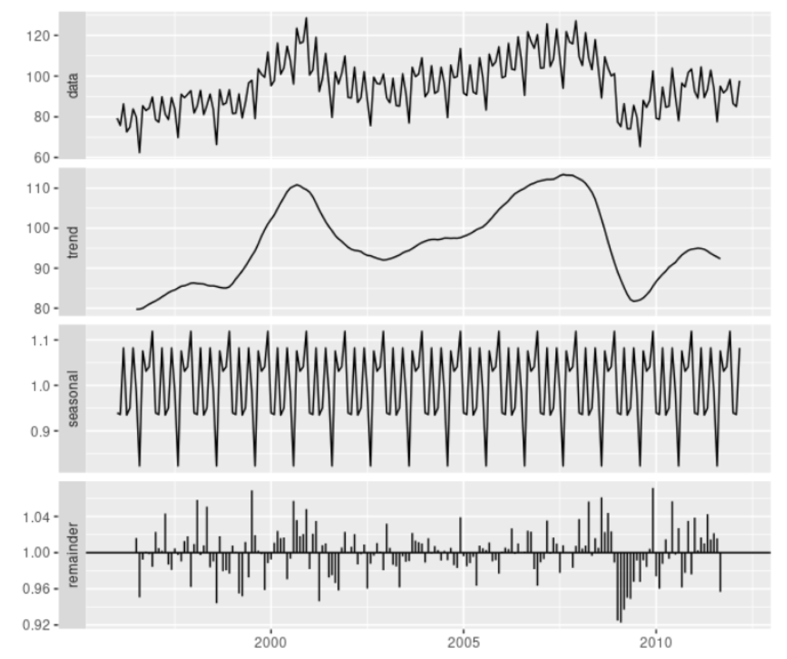
- yt = data at period t
- Tt = trend-cycle component at period t
- St = seasonal component at period t
- Rt = remainder component at period t (i.e., cyclic + irregular)
- Additive
- Multiplicative
- Additive model appropriate if magnitude of seasonal fluctuations does not vary with level
- If seasonal are proportional to level of series, then multiplicative model appropriate
- Multiplicative decomposition more prevalent with economic series
- Logs turn multiplicative relationship into an additive relationship:
More Techniques on Decomposition?
- X11
- SEATS
- STL
- …
Exponential Smoothing
Big Idea: Control the Rate of Change
- α controls the flexibility of the level
- If α = 0, the level never updates (mean)
- If α = 1, the level updates completely (naive)
- β controls the flexibility of the trend
- If β = 0, the trend is linear
- If β = 1, the trend changes suddenly every observation
- γ controls the flexibility of the seasonality
- If γ = 0, the seasonality is fixed (seasonal means)
- If γ = 1, the seasonality updates completely (seasonal naive)
Exponential Smoothing
- We want a model that captures the level (lt), trend (bt) and seasonality (st)
- How do we combine these element?
- Additively: yt = lt-1 + bt-1 + st-m + εt
- Multiplicatively: yt = lt-1 bt-1 st-m (1 + εt)
- Hybrid: yt = (lt-1 + bt-1) st-m + εt
- How do the level, trend, and seasonal components evolve over time?
Generalized ExponenTial Smoothing (ETS)
- General Notation of ETS
- E: Error
- T: Trend
- S: Season
- Error: Additive (“A”) or multiplicative (“M”)
- Trend: None(“N”), additive (“A”), multiplicative (“M”), or damped (“Ad”)
- Seasonality: None(“N”), additive (“A”), or multiplicative (“M”)
ETS: Generalized Exponential Smoothing
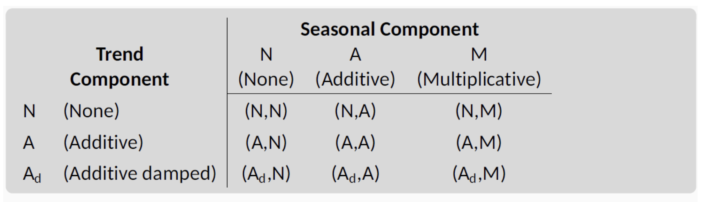
- (N,N): Simple exponential smoothing
- (A,N): Holt’s linear method
- (Ad,N): Additive damped trend method
- (A,A): Additive Holt-Winters’ method
- (A,M): Multiplicative Holt-Winters’ method
- (Ad,M): Damped multiplicative Holt-Winters’ method
Simple Exponential Smoothing (SES)
- Equation
| y_{T-1}+\alpha&space;(1-\alpha)^2y_{T-2}+\cdots&space;,&space;0\leq&space;\alpha&space;\leq&space;1) |
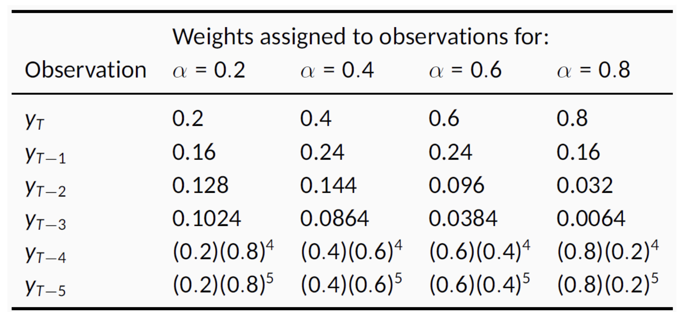
SES as Component Form
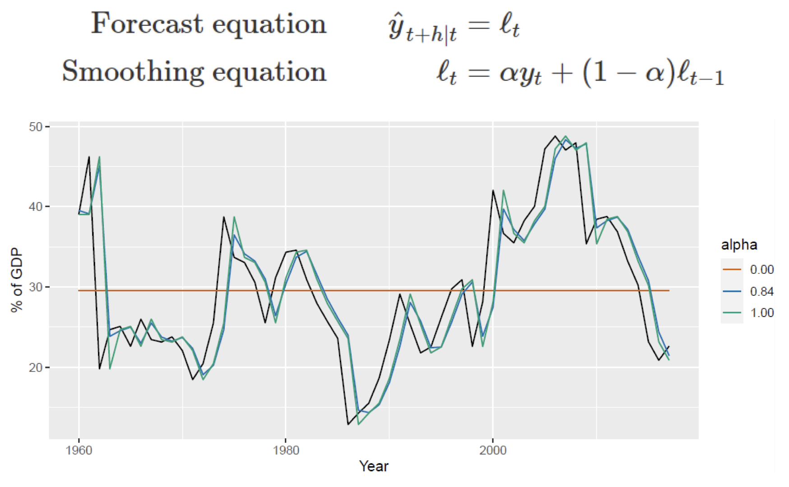
Adding Trend: Holt’s Linear Trend
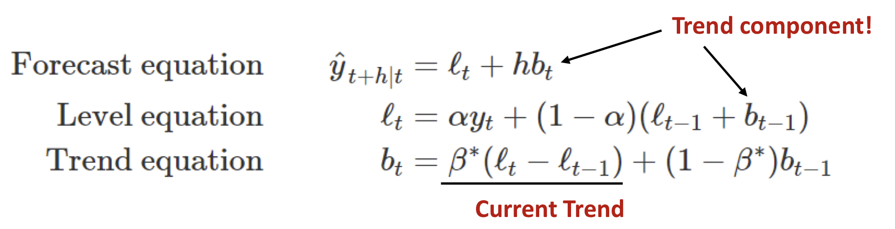
- Holt’s method with additive errors
- Assumption: εt = yt - lt-1 - bt-1 ~ NID(0, σ2) <- Normally Independent Distribution
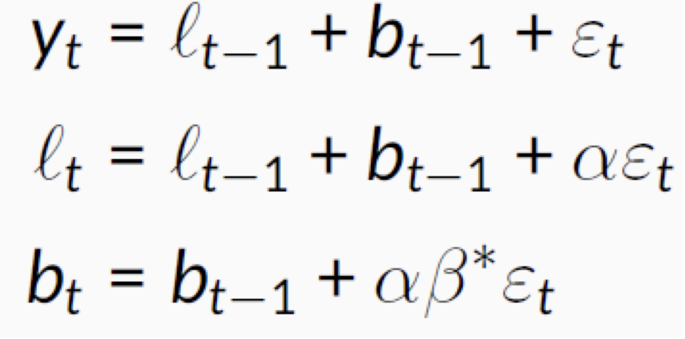
Damped Trend
- Good to forecast time-series values in a long range
- H) Trend less affect to the values in distant future
- Equation
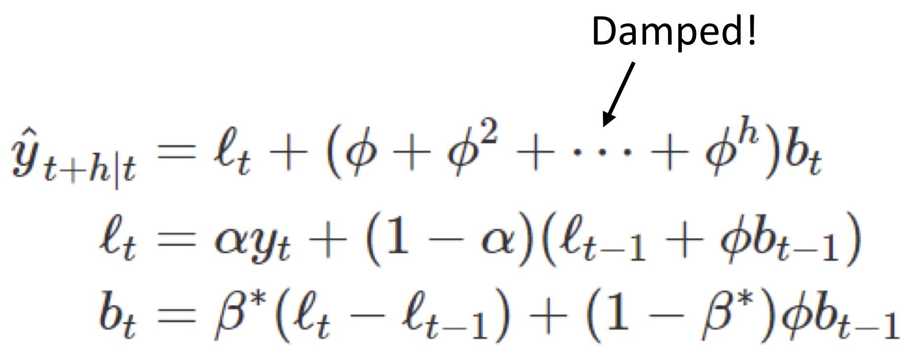
- Damping parameter - < Φ < 1
- If Φ = 1, identical to Holt’s linear trend
- As h -> ∞
| ) |
- Short-run forecasts trended, long run forecasts constant
Adding Seasonality: Holt-Winters Method
- Equation
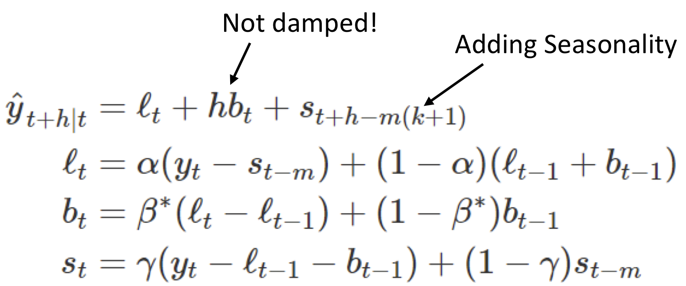
- Seasonal component is usually expressed as
- Substitute in for lt:
- Set γ = γ*(1 - α), then 0 <= γ <= 1 - α
ARIMA
Quick Glance At ARIMA
AR: autoregressive (lagged observation as inputs)
I: integrated (differencing to make series stationary)
MA: moving average (lagged errors as inputs)
An ARIMA model is rarely interpretable in terms of visible data structures like trend and seasonality. But it can capture a huge range of time series patterns.
Stationary
- Definition
- If {y_t} is a stationary time series, then for all s, the distribution of (yt,…,yt+s) does NOT depend on t
- Characteristics
- Roughly horizontal
- Constant variance
- No patterns predictable in the long-term
- For ARIMA modeling, we need to stabilize the mean!
- By Differencing
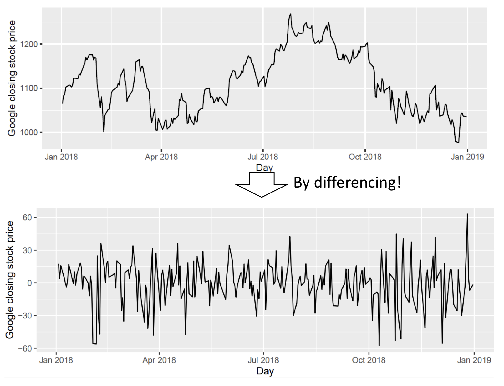
Differencing
- Differencing helps to stabilize the mean
- (First-order) differencing
- The “differenced series” is the change between each observation in the original series: yt’ = yt - yt-1
- The differenced series will have only T - 1 values since it is not possible to calculate a difference y1’ for the first observation
Other Differencing?
- Second-order differencing
- In practice, it is almost never necessary to go beyond second-order differences
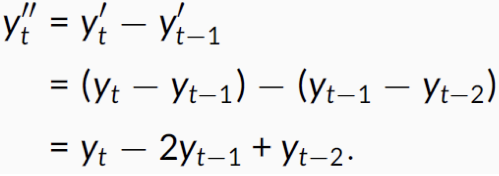
- Seasonal differencing
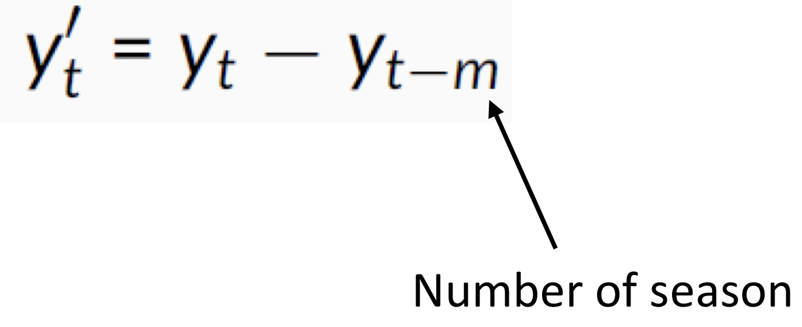
AutoRegressive (AR) Model
- Equation (p-th order)
where εt is white noise.
- Same as the multiple regression with lagged values of yt as predictors
- Only for stationary data with constraints on parameters

Moving Average (MA)
- Equation (q-th order)
where εt is white noise.
- Same as multiple regression with past errors as predictors (not moving average smoothing)
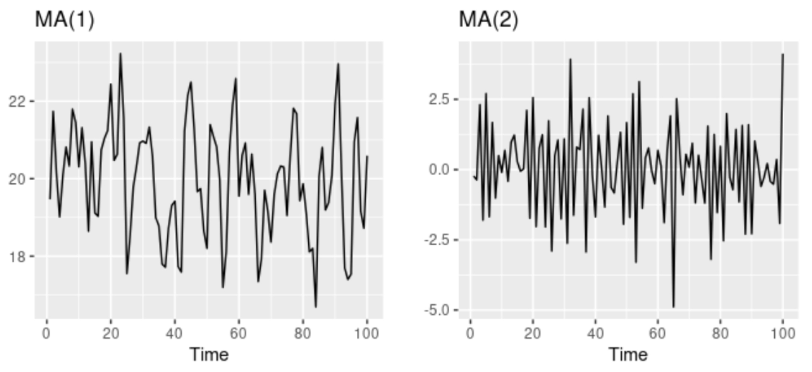
AR(p) = MA(∞)
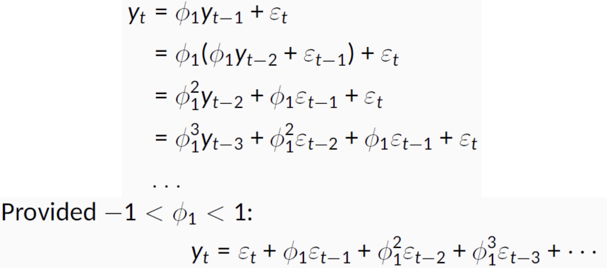
- How about MA(q) -> AR(∞)?
Invertible Property
- MA(q) -> AR(∞) when the parameters of MA are restricted (called invertible property)
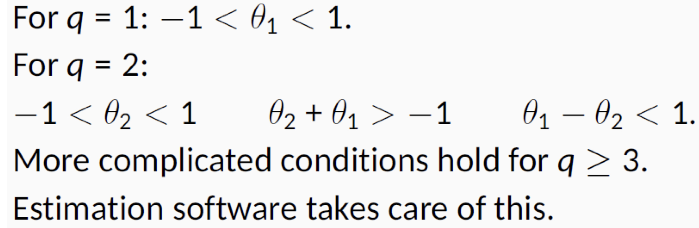
AR + MA + Differencing = ARIMA
- Equation: ARIMA(p, d, q)
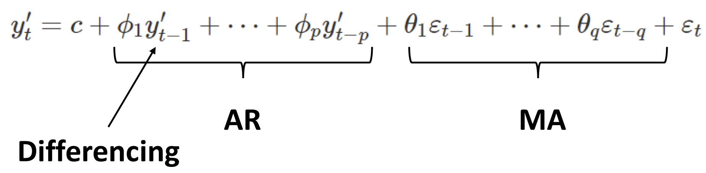
- White noise: ARIMA(0, 0, 0)
- AR(p): ARIMA(p, 0, 0)
- MA(q): ARIMA(0, q, 0)
- How to choose parameters? -> MLE
Seasonal ARIMA
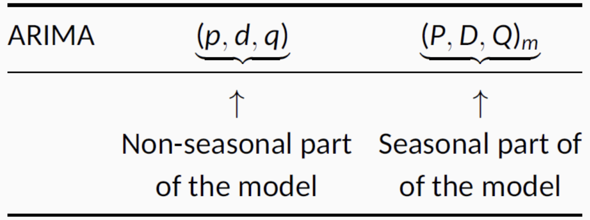
- Example: SARIMA(1, 1, 1)(1, 1, 1)4
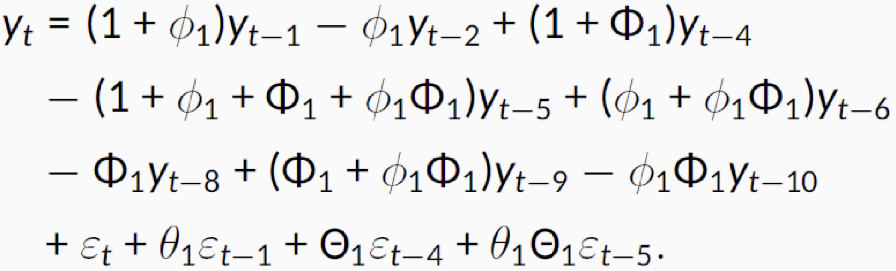
ARIMA vs. ETS
- Myth: ARIMA models are more general than exponential smoothing
- Linear exponential smoothing models are all special cases of ARIMA models
- Non-linear exponential smoothing models have NO equivalent ARIMA counterparts
- Many ARIMA models have NO exponential smoothing counterparts
- ETS models all non-stationary
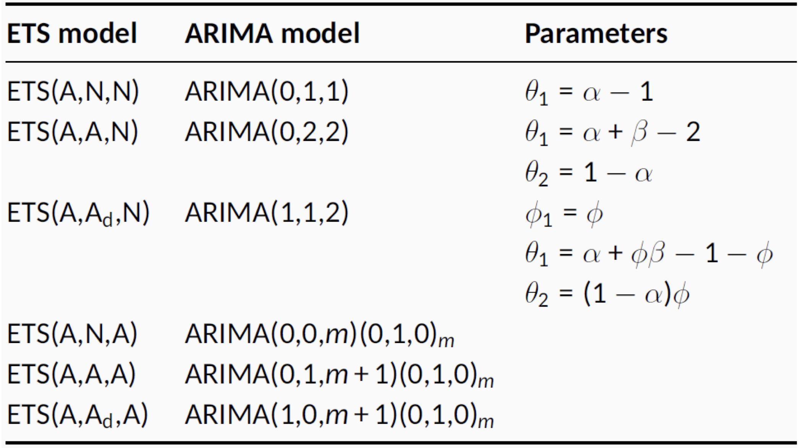
Reference
- Mining of Massive Datasets by Jure Leskovec, Anand Rajaraman, Jeff Ullman
- Introduction to Big Data Lecture by Daejin Choi in Incheon National University